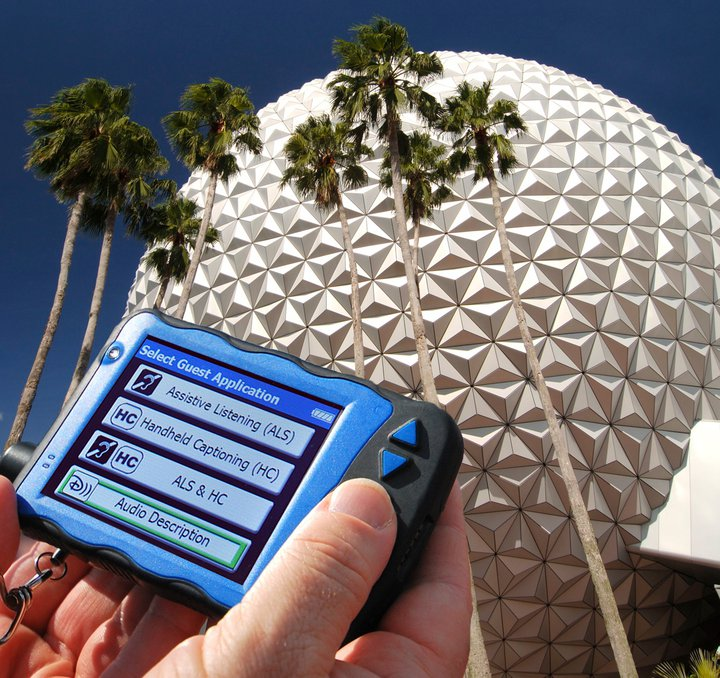
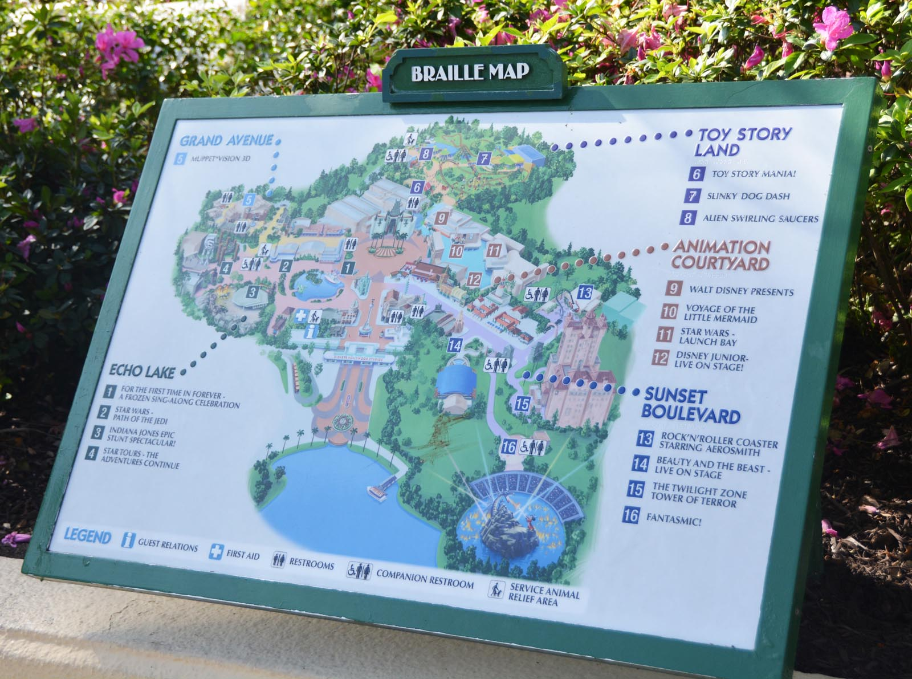
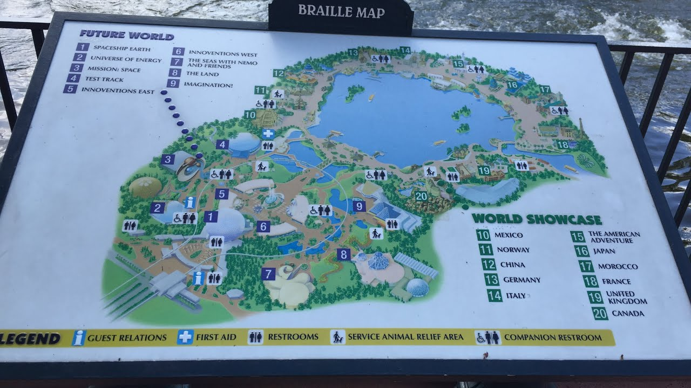
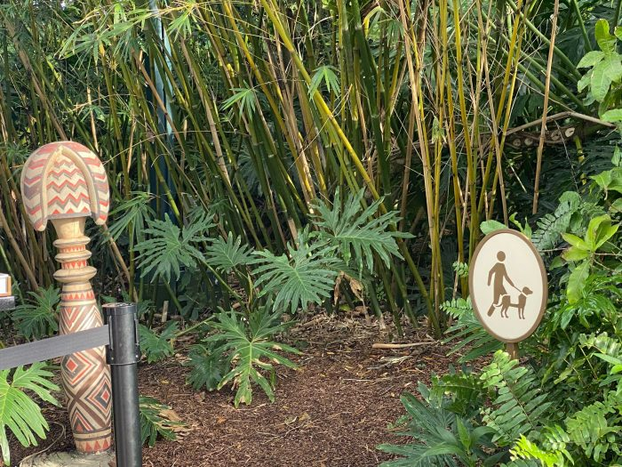
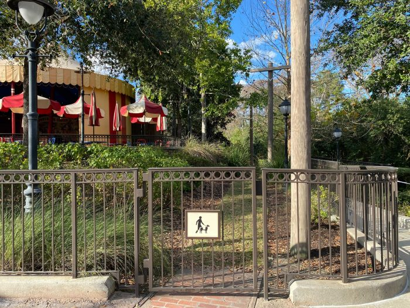
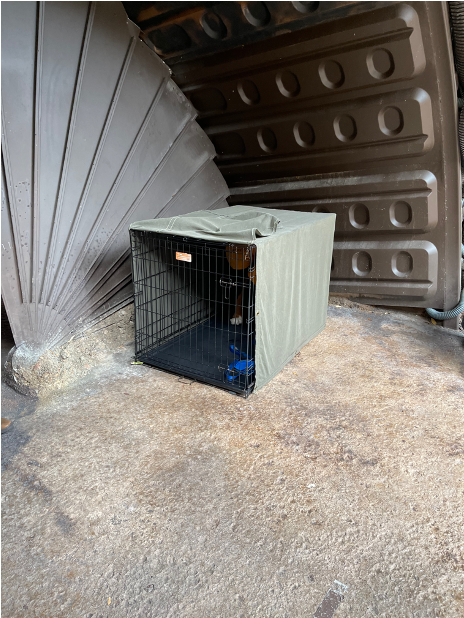
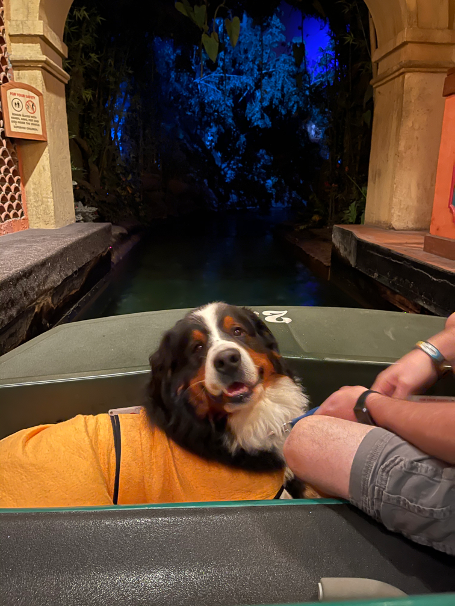

Is Audio Description available?
Yes, Disney provides Audio Description devices for rental. Rentals can be purchased and picked up at Guest Relations. Rentals cost a refundable fee of $25. It is recommended to go to the parks early to rent these devices since rentals are on a first come first serve basis and reservations are not available. Please bring your own headphones to use as well.
To see what types are attractions and shows work with the device please view this link: Link
Is Braille available?
According to Disney World's website, Disney offers three forms of Braille devices:
- Braille Guidebooks
- Portable Tactile Map Booklets
- Stationart Braille Maps
Please note that for the Braille Guidebooks and Portable Tactile Map Booklets, guests will have to print them at home or request them in advance by emailing or calling (407) 828-5005.
 Are service dogs allowed?
Service dogs are allowed in all parks. Service animals must be trained and can be a dog or miniature horse. Some rides allowed service animals to ride with the owner, while others may ask for the animal to wait at the load/unload area in a crate. There are multiple locations for service animals to relieve themselves as well.
   Are there scale models for me to feel?
At this time, only Tokyo Disneyland provides scale models of ride vehicles, buildings, and characters. Hopefully in the future, Walt Disney World will include this service.